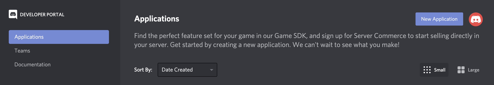
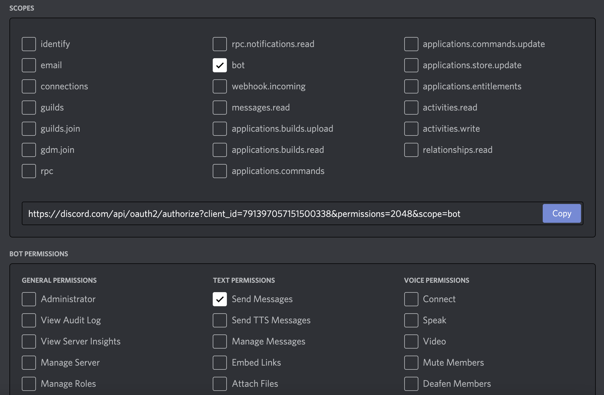
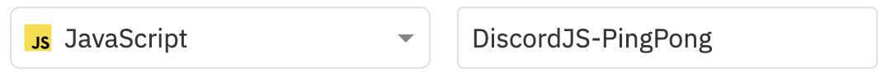
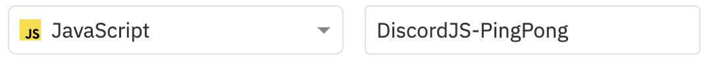

DiscordJS
Connaîs-tu Discord? Et les bots Discord? On peut les programmer en JavaScript grâce à la librarie DiscordJS!
Commencer !Connaîs-tu Discord? Et les bots Discord? On peut les programmer en JavaScript grâce à la librarie DiscordJS!
Commencer !Avant de commencer ce défi, il te faut un certain nombre de comptes
Si tu as tous ceci mis en place, tu peux commencer à créer ton bot dans l'étape 2.
On va créer le bot Discord! Pour ce faire, on doit aller sur la partie développeur de Discord. Tu peux aussi trouver cette partie en allant tout en bas du site Discord et appuyer sur "Developers".
Sois sûr d'être dans la partie "Applications". Ici, tu peux choisir "New Application" dans le coin supérieur à droite. Il te faut alors lui donner un nom. Tu peux l'appeler comme tu veux.
Tu peux alors voir toutes les informations de ton application. Tu peux lui ajouter un icône et une description si tu le souhaites. Quand tu as changé ceux ci, n'oublie pas de sauvegarder en appuyant sur "Save Changes" en bas de l'écran.

La partie intéressante se trouve dans la partie "Bot". Ici, tu peux appuyer sur "Add Bot" pour lier un bot à ton application. Tu devras confirmer en appuyant sur "Yes do it". Lorsqu'il est créé, cherches la partie "Public Bot" et désactive cette partie. (Sinon cela ne va pas marcher pour l'instant!)

On va alors ajouter ce bot à notre serveur.
Va dans la section "OAuth2" et descend jusqu'en bas. Ici, coche la case "bot". Ensuite une nouvelle boîte apparaît en bas de l'écran. Ici, coche "Send Messages" pour permettre à notre bot d'envoyer des messages. Ensuite appuie sur "Copy" pour copier le lien de ton bot.
Va alors sur le lien que tu viens de copier. Ici, tu seras demandé de sélectionner un serveur sur lequel ajouter ton bot. Sélectionnes le serveur Techies Lab.

Tu devrais voir ton bot apparaître sur le serveur! Il ne sait pas encore faire quoi que ce soit, mais il est là!

On va commencer à coder le bot. Connecte-toi à ton compte repl.it. Une fois sur la page choisit "+ New repl" pour créer un nouveau "repl" (Un nouveau code). Comme language, choisit "JavaScript" et donne lui un nom adapté.
 

Tu peux maintenant écrire du code dans la partie du milieu de l'écran. Au contraire du p5.js, rien n'y est écrit au début, on va devoir tout écrire par nous même!
Pour commencer, écris ces deux lignes suivantes:
const Discord = require('discord.js');
const bot = new Discord.Client();
La première ligne importe la librairie "discord.js", qui est importante pour pouvoir coder un bot Discord. La seconde ligne crée un client Discord, qui va être l'intermédiaire entre notre code JavaScript et notre serveur Discord. Ce client est un peu comme la représentation du bot dans notre code, et on l'appelle donc bot.
Appuie sur le bouton "Run" en haut au milieu de l'écran. Repl.it va alors installer la librairie "discord.js", ceci pourrait prendre un peu de temps. Après, dans la console (Partie droite de l'écran), tu verra
Hint: hit control+c anytime to enter REPL.
Lorsque cela apparaît, tu sais que ça a marché!
On va alors devoir activer le bot, c'est à dire le mettre en route. Pour ce faire, on va écouter le client jusqu'à ce qu'il dise qu'il soit prêt (Ou 'ready' en anglais). Quand il est prêt, on va exécuter la fonction en second paramètre.
bot.on('ready', function(){
console.log('Connecté');
});
Essaie de lancer ce code. Est-ce qu'il écrit "Connecté" dans la console? Si tout se passe bien il y aura écrit plein de choses dans la console, mais il n'y aura pas écrit "Connecté". Sais-tu pourquoi?
On doit se connecter au bot! Pour le moment, on n'a pas encore précisé sur quel bot on travaille! Pour cela, on a besoin d'un "token".
Va sur le portail développeur de Discord, sur ton application créée à l'étape 2. Va dans la partie "Bot" et cherche la partie "Token":

Appuie sur "Copy" pour copier ton token! On en a besoin pour se connecter au bot.
bot.login('Ton Token');
Ajoute cette ligne de code à la fin de ton code. Remplace "Ton Token" par le token que tu viens de copier.
Lorsque tu lances le code tu devrais voir qu'il arrive à se connecter!

On va maintenant envoyer des messages avec notre bot. Le bot qu'on va créer est très simple et sans but réel autre qu'éducatif: À chaque fois qu'un utilisateur envoie "Ping", le Bot répondra "Pong".
Pour ce faire, on doit coder une façon de savoir si un message arrive ou non. On doit écouter si un signal arrive! Le signal en question est 'message'. Te souviens tu comment faire?
bot.on('message', ...);
On doit alors remplacer les '...' par une fonction! Faisons cela!
bot.on('message', function() {
// ...
});
Dans le cas où on écoutait pour le signal 'ready', on avait une fonction comme celle ci. Mais ici on écoute pour le signal 'message', et donc un message vient avec le signal. La fonction prend donc un argument!
bot.on('message', function(msg) {
// ...
});
Il ne nous reste qu'à vérifier si le contenu du message vaut "Ping", et dans ce cas on va répondre "Pong"!
Pour accéder au contenu du message, on utilise msg.content. Donc pour vérifier si le contenu vaut "Ping", on fait le suivant:
if(msg.content === "Ping") {
// ...
}
Pour envoyer un message, on a deux options. Je te recommande d'essayer les deux et de déterminer par toi même lequel tu préfères.
Pour répondre à l'utilisateur qui a envoyé le message, on utilise msg.reply()
msg.reply("Pong");
Pour simplement envoyer un message dans le même canal que l'utilisateur qui a envoyé le premier message, on utilise msg.channel.send()
msg.channel.send("Pong");
Bravo! Ton bot est maintenant fonctionnel! Voici une liste de challenges si tu as fini à l'avance:
switch en JavaScript. Recherche "switch javascript" sur Google et essaie de comprendre pourquoi c'est utile ici!